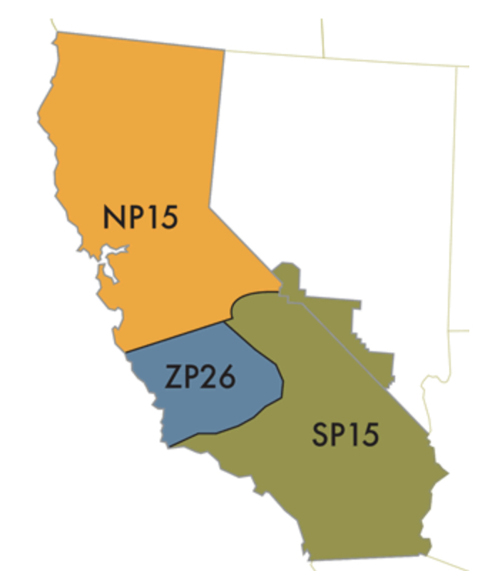

California Solar Energy Generation Forecasting
Below is an abbreviated version of my most recent personal project, where I combined data from various sources to forecast solar energy generation in the SP15 region of Southern California. Enjoy learning about my motivation for the project and brief explanations of different parts of this process. If you're interested in taking a deeper look a the full GitHub repo, you can find it at the bottom of this page or any page on this website. I will update this section with new projects as I complete them and break them down into shorter form reports.
Introduction & Motivation
1. Conduct an analysis on subject matter outside of my usual focus, but one that is of interest for potential professional opportunities.
2. Give myself an opportunity to improve my skills with various tools, techniques, and methodologies, such as API interactions, time-series forecasting, and XGBoost model building and evaluation.
3. Find a balance between showcasing what I already know and demonstrating how I approach and work through a project using tools and techniques I've yet to master, within a new subject area.
Project goal: Use High-Resolution Rapid Refresh (HRRR) weather forecasts at geographically significant locations to predict hourly solar energy generation in the SP15 region of Southern California. The California Independent System Operator (CAISO) provides hourly values for both actual and forecasted solar energy generation within the SP15 region and I will try to forecast these values while outperforming their existing predictions.
Data
I used the High Resolution Rapid Refresh (HRRR) model to collect gridded weather forecasts and combined this with actual hourly solar generation data from CAISO for the SP15 region. The final dataset covered three years of hourly forecasts at three grid points within SP15 and included variables like temperature, surface pressure, total precipitation, and solar radiation proxies.
Feature Engineering
I engineered features such as lagged values of past actual and forecasted generation, time-of-day and seasonal indicators, and statistical summaries of nearby grid point forecasts. These helped the model capture cyclical trends and spatial variation within the SP15 region.
Modeling
I trained and tuned multiple models including XGBoost and Random Forest regressors, using time-series cross-validation to preserve temporal integrity. XGBoost consistently outperformed the other models in terms of RMSE and MAE. Key predictive features included solar radiation proxies, time-of-day, and prior-day generation values.

Conclusion
This project shows how weather forecast data can be leveraged to make meaningful predictions about solar energy output at the grid level. While the model isn't ready for live deployment, it offers a scalable template for further refinement. You can view the full code and deeper analysis in the full GitHub notebook here.